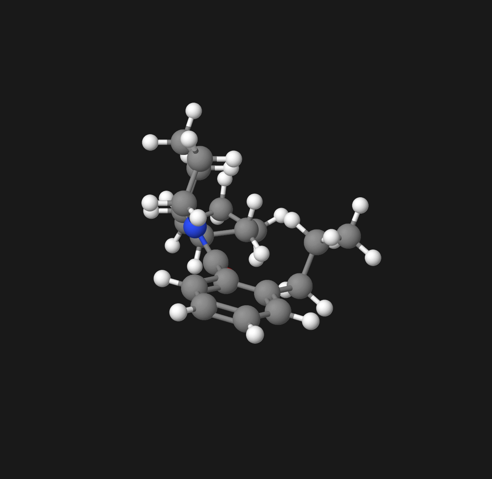
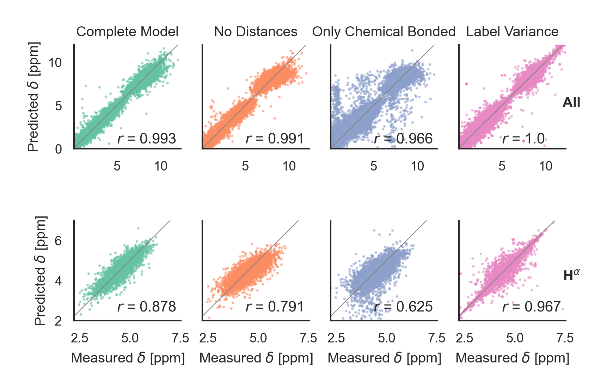
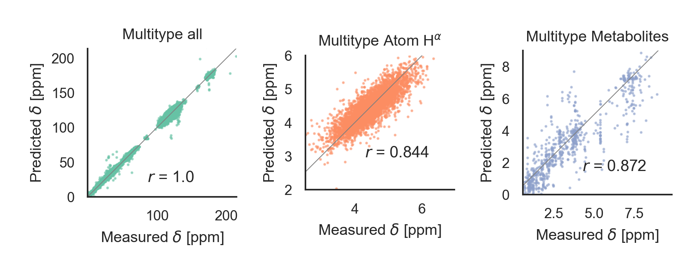
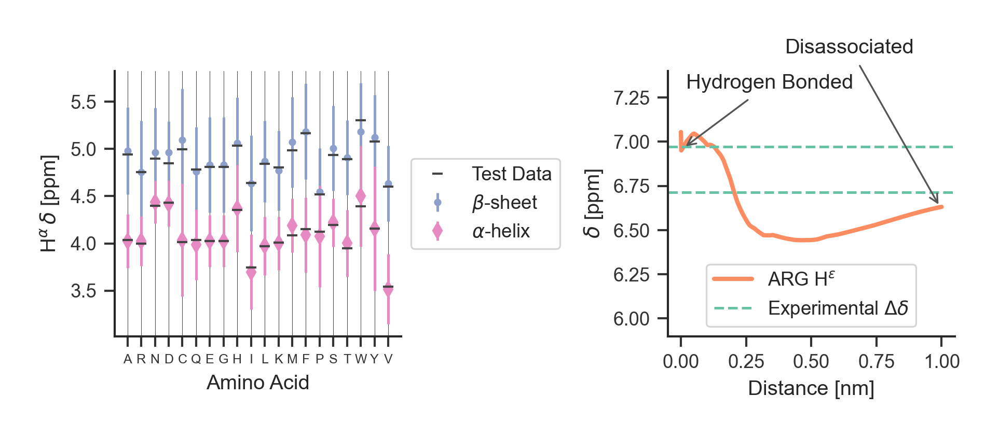
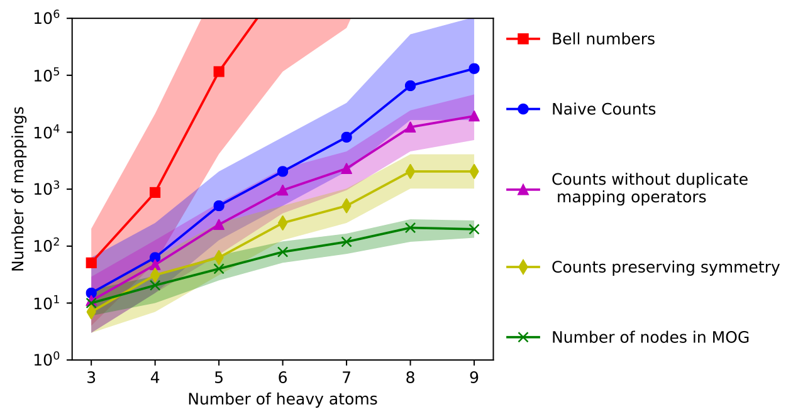
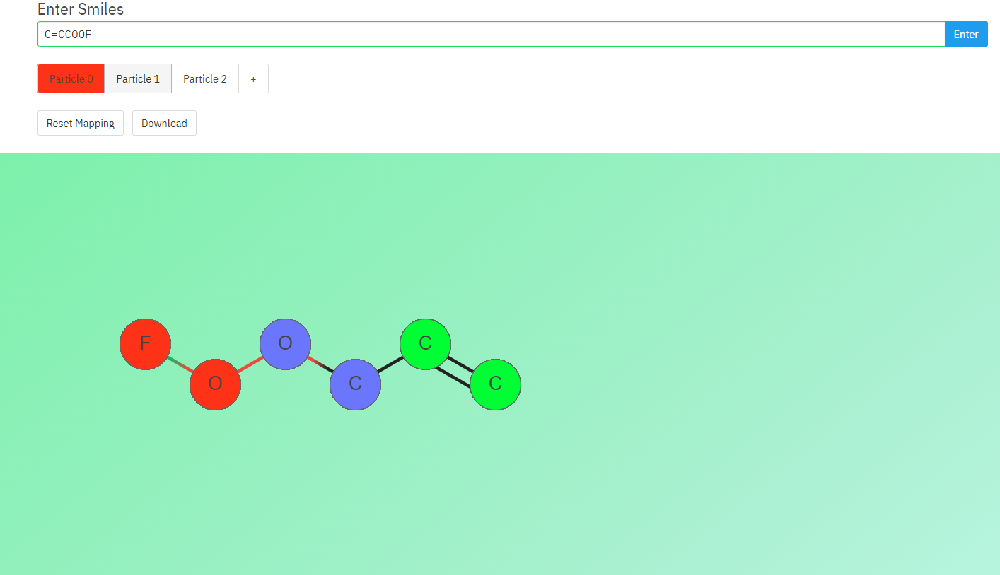
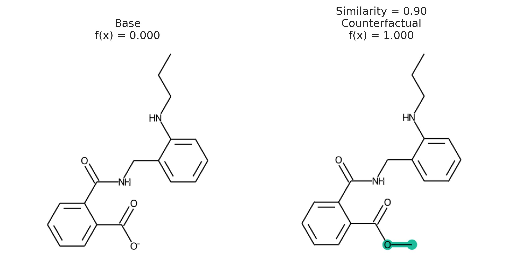
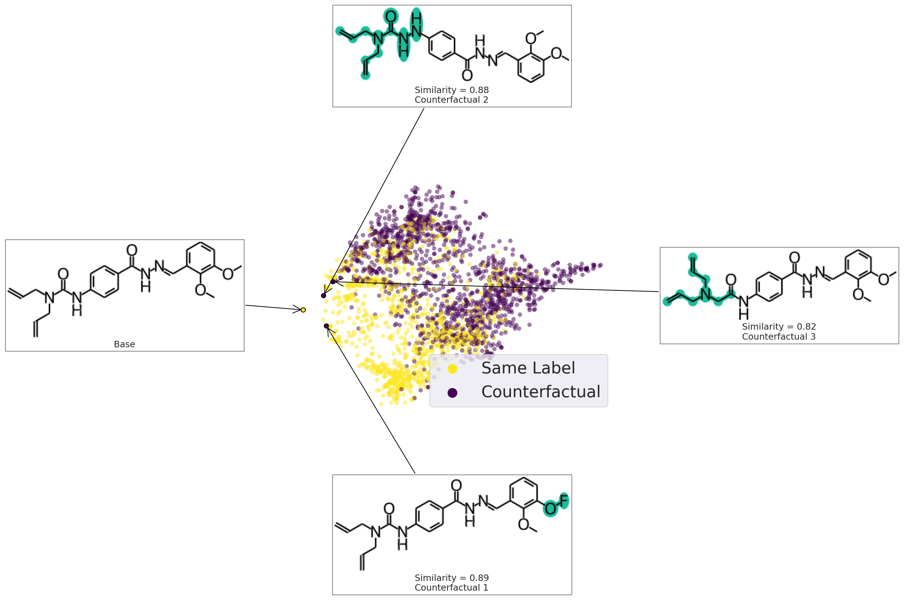

Making cool stuff with
✨deep learning✨
Andrew White
University of Rochester
Department of Chemical Engineering
IBM Zürich
August 31, 2021
The Whitelab
Inductive Bias
Explicit choices made in architecture that reflect data-generation or solution space.
Inductive Bias
Mol Graph

Point Cloud
Inductive Bias
Mol Graph
- atom permutation equivariance
- bond permutation equivariance
Point Cloud
- atom permutation equivariance
- translation equivariance
- rotation equivariance
Inductive Bias
Mol Graph
- atom permutation equivariance
| C | O | N | |
|---|---|---|---|
| 0 | 1 | 0 | 0 |
| 1 | 1 | 0 | 0 |
| 2 | 1 | 0 | 0 |
| 3 | 1 | 0 | 0 |
| 4 | 1 | 0 | 0 |
| 5 | 1 | 0 | 0 |
| 6 | 1 | 0 | 0 |
| 7 | 1 | 0 | 0 |
| 8 | 1 | 0 | 0 |
| 9 | 1 | 0 | 0 |
| 10 | 0 | 1 | 0 |
Inductive Bias
Mol Graph
- atom permutation equivariance
| C | O | N | |
|---|---|---|---|
| 3 | 1 | 0 | 0 |
| 1 | 1 | 0 | 0 |
| 2 | 1 | 0 | 0 |
| 0 | 1 | 0 | 0 |
| 4 | 1 | 0 | 0 |
| 5 | 1 | 0 | 0 |
| 6 | 1 | 0 | 0 |
| 7 | 1 | 0 | 0 |
| 8 | 1 | 0 | 0 |
| 9 | 1 | 0 | 0 |
| 10 | 0 | 1 | 0 |
Inductive Bias
Example
Point Cloud
- atom permutation equivariance
- translation equivariance
- rotation equivariance
Data/Training Tricks
| Method | Equivariance |
| Matrix Determinant | Permutation Invariance |
| Eigendecomposition | Permutation Invariance |
| Reduction (sum, mean) | Permutation Invariance |
| Pairwise Vector/Distance | Translation/Rotation Invariance |
| Angles | Translation/Rotation Invariance |
| Trajectory Alignment | Rotation/Translation Invariance |
| Molecular Descriptors | All Invariant |
| Training/Testing Augmentation | All Invariant |
Representation and Model Decisions
SMILES
CCCC1=CC=CC=C1C(=O)
N2CCCC[C@H]2C3CCCC3
Sequence Network
(1D Conv, RNN, Transformer)
Mol Graph
Graph Neural Networks
Points
Equivariant Neural Networks
Representation and Model Decisions
SMILES
Preferred
Mol Graph
If you must
Points
Avoid
The Power of Text
Text is excellent at predicting scalars — invariant to permutations.* Training is fast, implementations are easy, available in javascript🚀
Predicting Chemical Shifts with GNNs
Yang, Z., Chakraborty, M. & White, A. D. Predicting chemical shifts with graph neural networks. Chemical Science (2021).
Inductive Bias
- Chemical shift is per-atom. Need perm equivariance
- Chemical shift should be position dependent
- Chemical shift should not use descriptors to generalize
Inductive Bias
- Chemical shift is per-atom. Need perm equivariance
- Chemical shift should be position dependent
- Chemical shift should not use descriptors to generalize
Graph Neural Network with Relative Distances
Graph Neural Network with Relative Distances

Graph Neural Network

Graph Neural Network

Graph convolutional neural network example.
Graph Neural Network Architecture (structure of $f(\vec{r})$)

Parameters
- 2,262 proteins, 361 metabolite molecules
- 5 million chemical shifts (526,000 fragments)
- Network Size: 3 edge FC layers (tanh), 4 GCN (relu), 3 FC Layers (tanh)
- Withheld 20,000 fragments (180,000 chemical shifts)
- Adam optimizer (0.001), huber loss, 0.15 dropout, 128 node feature dim, 4 edge feature dim
| H RMSD | H \(r\) | H\(^\alpha\) RMSD | H\(^\alpha\) \(r\) | Parameter Number | |
|---|---|---|---|---|---|
| Perfect | 0.176 | 0.965 | 0.138 | 0.967 | |
| Model (H) | 0.459 | 0.781 | 0.264 | 0.878 | 1,185,437 |
| Model (all) | 0.527 | 0.718 | 0.293 | 0.844 | 1,185,437 |
| Medium | 0.511 | 0.712 | 0.290 | 0.848 | 297,181 |
| Small | 0.501 | 0.726 | 0.288 | 0.849 | 42,123 |
| Weighted | 0.471 | 0.766 | 0.274 | 0.865 | 1,185,437 |
| SHIFTX+ | 0.455 | 0.787 | 0.248 | 0.890 | |
| SHIFTX+\(^*\) | 0.378 | 0.836 | 0.197 | 0.932 | |
| CS2Backbone | 0.716 | 0.418 | 0.417 | 0.708 |
Edge Feature Choice
Molecule Types
Salt Bridge Sensitivity
Salt Bridge Sensitivity
pip install nmrgnn
Grouping Atoms in Molecules
Li, Z., Wellawatte, G. P., Chakraborty, M., Gandhi, H. A., Xu, C. & White, A. D.
Graph neural network based coarse-grained mapping prediction. Chemical science 11, 9524–9531 (2020).
Molecular Dynamics History

Extrapolating
| Year | Event |
|---|---|
| 2023 | The first simulation of every atom in a ribosome for 10 milliseconds |
| 2038 | The first simulation of every atom in a virus for 1 second |
| 2131 | The first simulation of every atom of a cell for 1 hour |
| 2191 | We can simulate every atom of every cell in a heart for 1 heartbeat |
| 2227 | Every atom of every cell in a human brain can be simulated as fast they move in a human brain |
Coarse-grained modeling
Remove degrees of freedom that are unnecessary to model the physics.
Little Work or Theory
\[ R^{\textrm{FG}} \rightarrow R^{\textrm{CG}} \]Excellent Theory
\[ U\left(R^{\textrm{FG}}\right) \rightarrow U\left(R^{\textrm{CG}}\right) \]Enumerating Mapping Operators
Cost of labeling partitions
Labeling a single proposed CG mapping (graph partition) requires building a CG simulation. Realistically, 2-3 per week with PhD student.
Labeling a single proposed CG mapping (graph partition) requires building a CG simulation. Realistically, 2-3 per week with PhD student.
Can we just match humans at this task? Turing test of CG mappings/graph partitions
2,000 Expert Generated Mappings
Humans agree about 90% of the time
Graph Neural Network + Spectral Clustering

Results

| Method | AMI | Cut Prec. | Cut recall | Cut F1-score |
|---|---|---|---|---|
| GAP | 0.33 | 0.47 | 0.73 | 0.54 |
| Graclus | 0.45 | 0.58 | 0.81 | 0.65 |
| ClusterNet | 0.52 | 0.64 | 0.62 | 0.58 |
| METIS | 0.56 | 0.63 | 0.56 | 0.58 |
| Cut Cls. | 0.67 | 0.75 | 0.73 | 0.73 |
| Spec. Cluster. | 0.73 | 0.75 | 0.75 | 0.75 |
| (Ours) | 0.79 | 0.80 | 0.80 | 0.80 |
| Human | 0.81 | 0.81 | 0.81 | 0.81 |
- Can create automated mapping with choice of bead number
- Dataset can be used for further development in supervised mapping
- GNNs are a good model type for this problem
XAI with Counterfactuals
Wellawatte, G. P., Seshadri, A. & White, A. D. Model agnostic generation of counterfactual explanations for molecules. (2021).
What is an explanation of a prediction?
- Justification: reasoning for using a prediction, like test error
- Interpretability: "the degree to which an observer can understand the cause of a decision"
- Explanation: a presentation of information intended for humans that give the context and cause for a prediction
Instance Explanations
- Feature Explanation: which features contributed most to outcome?
- Contrastive Explanation: what would the outcome be if the features were different?
- Counterfactual Explanation: what are the closest features with a different outcome?
Counterfactual
My grant proposal was rejected from NSF. If I had correctly formatted my references, it would have been funded.
Chemistry Counterfactual
Counterfactuals are solution to optimization. Given prediction $x,\hat{f}(x)$, find $x'$ with
\begin{aligned} \texttt{minimize}&\quad d(x, x')\\ \texttt{such that}&\quad \hat{f}(x) \neq \hat{f}(x') \end{aligned}
Challenging because optimization requires $\nabla_x\hat{f}(x)$
Use STONED Method to enumerate chemical spcae

Output
Accuracy of method depends on being able to generate close, interpretable structures near $x$.
- STONED: Generate structures with generative property of SELFIES
- PubChem: Sample nearby structures deposited in PubChem
Alphabet of plausible tokens

pip install exmol
import exmol
base = 'CCCO'
# preset: narrow, medium, wide, chemed
samples = exmol.sample_space(base, model_fxn, preset="medium")
cfs = exmol.cf_explain(samples)
exmol.plot_cf(cfs)
Summer Projects
- emoji-math: np.sin(🏰) = 🏯
- molecule-dream
- ✨chemhover✨
- deep learning book
- nlcc
Perspective on GPT-3/Codex in chemistry this week